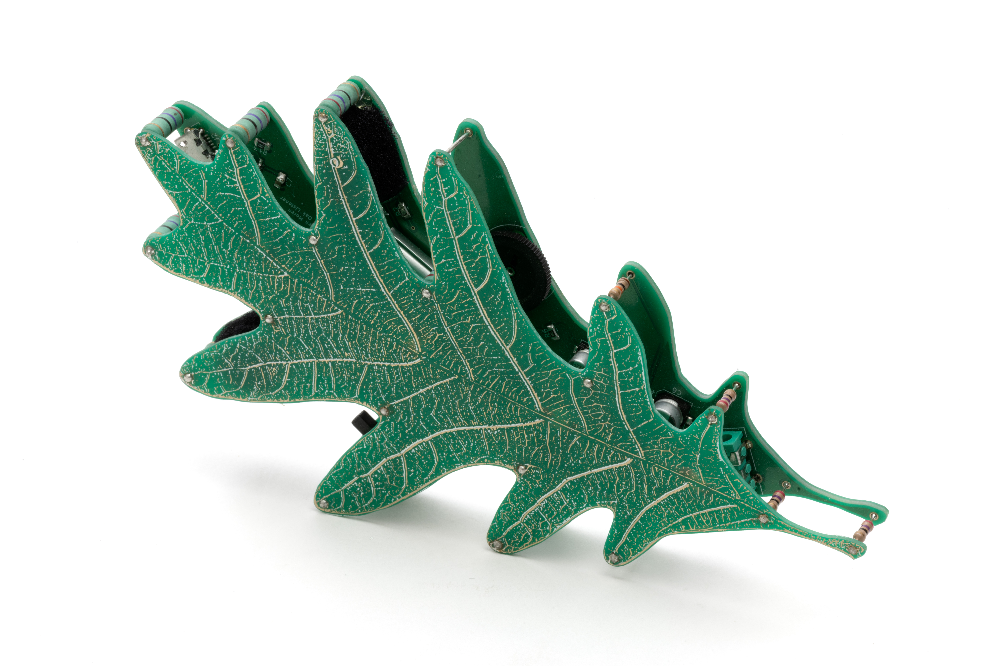

A device for enhanced and focused listening.
The White Oak Listener is a site responsive stereo listening device, amplifying the sounds around a listener as they walk through the restored oak savanna at Silverwood Park. The microphones are tuned for listening to winged insects sing within the environment's tall grasses.
The printed circuit board device is assembled using cordwood construction and features stereo microphones, volume control, on/off switch, 3.5mm headphone jack, and a USB rechargeable battery.
Developed during an artist residency at Silverwood Park.
photo credits: Rik Sferra
White Oak Listener
2018
Electronics, custom printed circuit board
3.5" x 6" x 1.5"